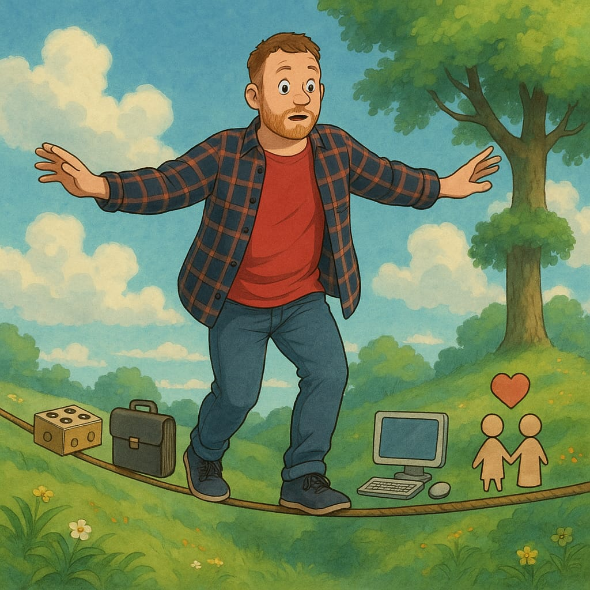

My Resume
Professional Experience
2020 - 2025
Kindergarten Teacher - Kirchenpflege Marbach
Kindergarten Teacher - Kirchenpflege Marbach
2018 - 2020
Kindergarten Teacher - Stadt Remseck
Kindergarten Teacher - Stadt Remseck
2018
Recognition Internship - Stadt Remseck
Recognition Internship - Stadt Remseck
2017
Recognition Internship - Stadt Steinheim
Recognition Internship - Stadt Steinheim
Education
2015 - 2017:
State-certified Kindergarten Teacher - Anna-Haag-Schule Backnang
State-certified Kindergarten Teacher - Anna-Haag-Schule Backnang
2013 - 2015:
Bachelor in Adult Education (not completed) - PH Ludwigsburg
Bachelor in Adult Education (not completed) - PH Ludwigsburg
2012 - 2013:
Social Sciences Studies (not completed) - Uni Stuttgart
Social Sciences Studies (not completed) - Uni Stuttgart
2009 - 2012:
High School Diploma - IB Asperg
High School Diploma - IB Asperg
IT Skills
- HTML & CSS (responsive web design)
- Java (basic programming, console applications)
- pgAdmin (basic SQL database handling)
- Visual Studio Code (code editor basics)
- IntelliJ IDEA (integrated development environment (IDE) basics with Java)
- Git & GitHub (version control and project hosting)
Soft Skills
- Empathic and strong communicator
- Structured and analytical mindset
- Team player with a cooperative attitude
- Motivated and quick to learn